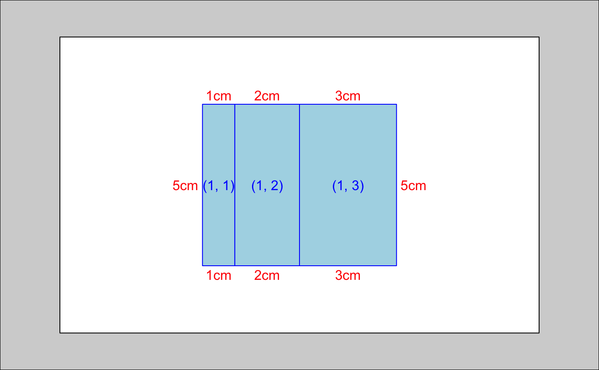

A grob table captures all the information needed to layout grobs in a table structure. It supports row and column spanning, offers some tools to automatically figure out the correct dimensions, and makes it easy to align and combine multiple tables.
Arguments
- widths
a unit vector giving the width of each column
- heights
a unit vector giving the height of each row
- respect
a logical vector of length 1: should the aspect ratio of height and width specified in null units be respected. See
grid.layout()for more details- name
a string giving the name of the table. This is used to name the layout viewport
- rownames, colnames
character vectors of row and column names, used for characteric subsetting, particularly for
gtable_align, andgtable_join.- vp
a grid viewport object (or NULL).
Details
Each grob is put in its own viewport - grobs in the same location are not combined into one cell. Each grob takes up the entire cell viewport so justification control is not available.
It constructs both the viewports and the gTree needed to display the table.
Components
There are three basics components to a grob table: the specification of table (cell heights and widths), the layout (for each grob, its position, name and other settings), and global parameters.
It's easier to understand how gtable works if in your head you keep
the table separate from it's contents. Each cell can have 0, 1, or many
grobs inside. Each grob must belong to at least one cell, but can span
across many cells.
Layout
The layout details are stored in a data frame with one row for each grob, and columns:
ttop extent of grobrright extent of grobbbottom extent oflleft extent of grobzthe z-order of the grob - used to reorder the grobs before they are renderedclipa string, specifying how the grob should be clipped: either"on","off"or"inherit"name, a character vector used to name each grob and its viewport
You should not need to modify this data frame directly - instead use
functions like gtable_add_grob.
See also
Other gtable construction:
gtable_col(),
gtable_matrix(),
gtable_row(),
gtable_spacer
Examples
library(grid)
a <- gtable(unit(1:3, c("cm")), unit(5, "cm"))
a
#> TableGrob (1 x 3) "layout": 0 grobs
gtable_show_layout(a)

# Add a grob:
rect <- rectGrob(gp = gpar(fill = "black"))
a <- gtable_add_grob(a, rect, 1, 1)
a
#> TableGrob (1 x 3) "layout": 1 grobs
#> z cells name grob
#> 1 1 (1-1,1-1) layout rect[GRID.rect.27]
plot(a)
# gtables behave like matrices:
dim(a)
#> [1] 1 3
t(a)
#> TableGrob (3 x 1) "layout": 1 grobs
#> z cells name grob
#> 1 1 (1-1,1-1) layout rect[GRID.rect.27]
plot(t(a))
# when subsetting, grobs are retained if their extents lie in the
# rows/columns that retained.
b <- gtable(unit(c(2, 2, 2), "cm"), unit(c(2, 2, 2), "cm"))
b <- gtable_add_grob(b, rect, 2, 2)
b[1, ]
#> TableGrob (1 x 3) "layout": 0 grobs
b[, 1]
#> TableGrob (3 x 1) "layout": 0 grobs
b[2, 2]
#> TableGrob (1 x 1) "layout": 1 grobs
#> z cells name grob
#> 1 1 (1-1,1-1) layout rect[GRID.rect.27]
# gtable have row and column names
rownames(b) <- 1:3
rownames(b)[2] <- 200
colnames(b) <- letters[1:3]
dimnames(b)
#> [[1]]
#> [1] 1 200 3
#>
#> [[2]]
#> [1] "a" "b" "c"
#>